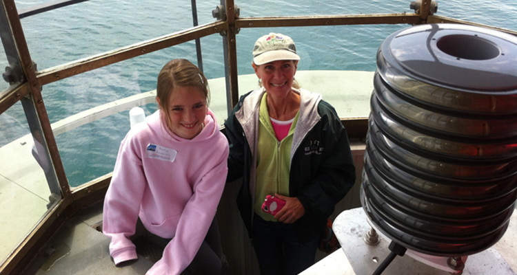

Our Service Offerings

Tours
We offer tours every Sunday of the 114-year-old Sea Girt Lighthouse. Group tours are offered year round by prior arrangement. Come view our extraordinary display of lighthouse memorabilia today!
Photo Tour
View our extensive scrapbook of the lighthouse, collected over centures. These snapshots collected show keepers, their families and later Coast Guardsmen living in the historical monument.
Membership
Membership provides financial support to operate Sea Girt Lighthouse. If you are not yet a member, consider joining some 450 of your neighbors.
Volunteer
Interested in volunteering? Your time can help in many ways! Learn the history of the house by aiding in repairs, idenifying artifacts, reaearching history, and more!
“This was the best lighthouse tour I've ever been on”
⁓Elle Pierce
“Thank you to karen at Sea Girt for making this trip amazing!”
⁓Jane Doe
“The lighthouse is beautifully restored and looks amazing.”
⁓Peter Griffin
“The old-world feel is captured perfectly.”
⁓Bob Smith
“Sea Girt Lighthouse made my vacation dream a reality.”
⁓Helen Brown
“We received individual attention and loved every minute!”
⁓Elle Pierce
“The history buff in me jumped for joy at the lighthouse!”
⁓Boe Schnitzel